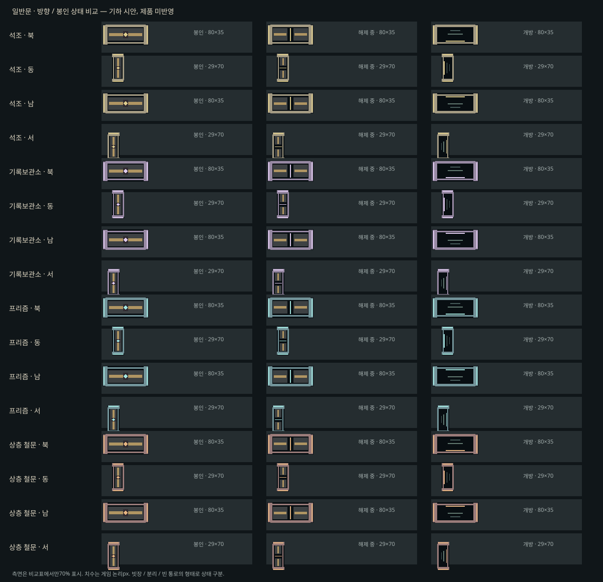

석조 / 기록보관소 / 프리즘 / 상층 철문 × 북·동·남·서 × 봉인·해제 중·개방 = 48개 기하 시안입니다. 색에 의존하지 않고 빗장, 갈라진 틈, 빈 통로로 상태를 구별합니다. 완성 원화·게임 화면이 아니며 제품에는 반영하지 않았습니다.

측면 문은 표 안에서만70% 표시합니다. 실제 표시 규격은 상하80×35 / 좌우29×70 논리px이며 0층 원화는80×40 예외입니다. 실제 방 배경·겹침·통행성·모션은 미검증입니다.